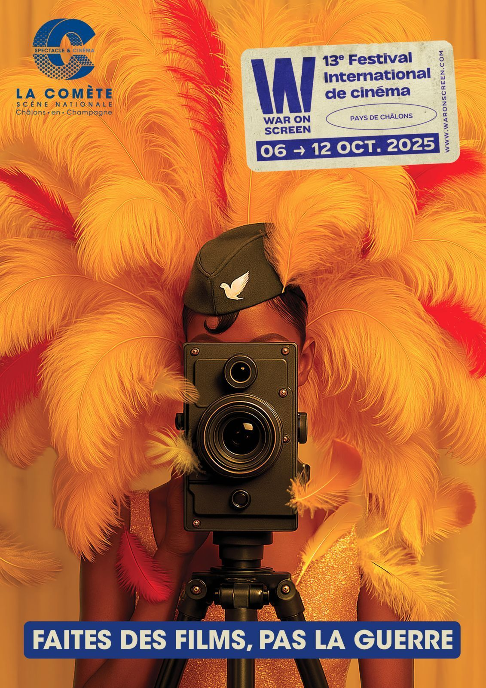
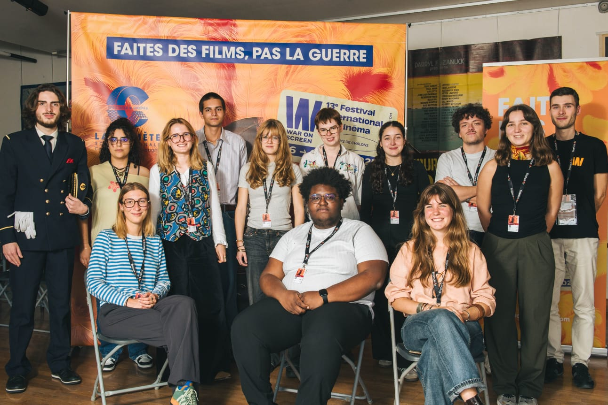

Le cinéma est très important pour moi car il permet de voyager. Sa grande force est sa capacité à transmettre les émotions, et il est utile pour prendre du recul sur certains sujets, pour mettre en lumière des combats, ou simplement pour se détendre.

J'ai eu le plaisir de participer à un festival de films de guerre en tant que membre d'un jury étudiant de 12 personnes, avec qui j'ai pu discuter de notre vision sur les 11 films de la sélection.
Cette expérience a été particulièrement enrichissante, me permettant de développer mon esprit critique et ma culture à travers des discussions éclairantes et le visionnage de films sur le thème de la guerre.


